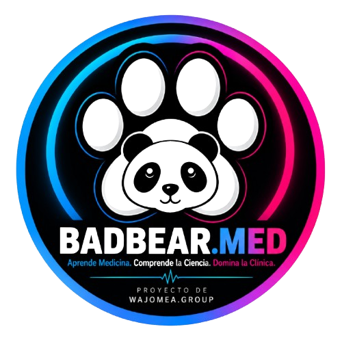

Cirugía General
Teorías, seminarios, sabatinas y talleres.
Progreso en preparación
Abrir aula de Cirugía General
BADBEAR.CAMPUSPORTAL ACADÉMICOAccede a tus resultados y sigue tu progreso en cada curso.
Comprobando disponibilidad…Consulta tus evaluaciones con tu código de alumno y contraseña.
Escribe tu código de estudiante. Si tu cuenta y correo están registrados, recibirás un enlace válido durante 30 minutos. Revisa Recibidos y Spam. Si ya no tienes acceso a ese correo, comunícate con Administración.
Utiliza esta opción únicamente si la administración te entregó un código de activación o recuperación.
Este enlace permite activar tu cuenta o recuperar el acceso. Usa de 12 a 128 caracteres y una contraseña diferente a tu código de alumno.
Consulta los horarios y accesos a las sesiones de tus cursos.
Teorías, seminarios, sabatinas y talleres.
Progreso en preparación
Abrir aula de Cirugía General5 unidades y 25 clases de repaso quirúrgico.
Abrir aula de Cirugía BATIMIX0 evaluaciones publicadas. El avance de estudio se registra por separado.
Selecciona un curso para consultar tus evaluaciones publicadas.
Solo podrás consultar tus calificaciones después de activar tu cuenta e ingresar con tus credenciales. Pulsa el botón para solicitarlas expresamente.
Consulta tus apuntes y recursos académicos desde el Campus.
Estos accesos están disponibles desde tu sesión de BADBEAR.CAMPUS.
Inicia sesión en BADBEAR.CAMPUS. Después encontrarás BADBEAR.MED, calificaciones, biblioteca, más proyectos y tu perfil dentro de tu espacio privado.